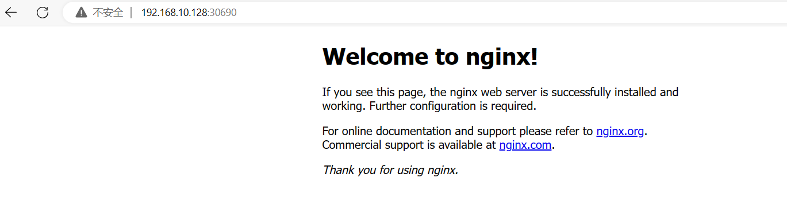
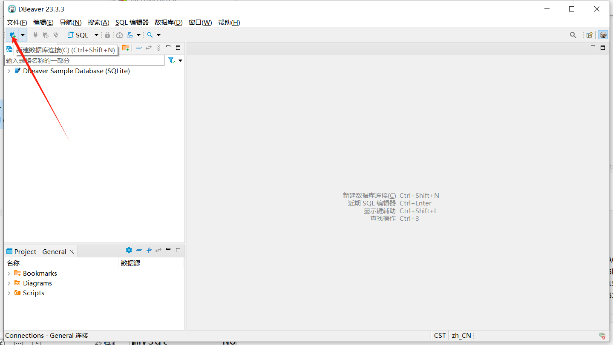
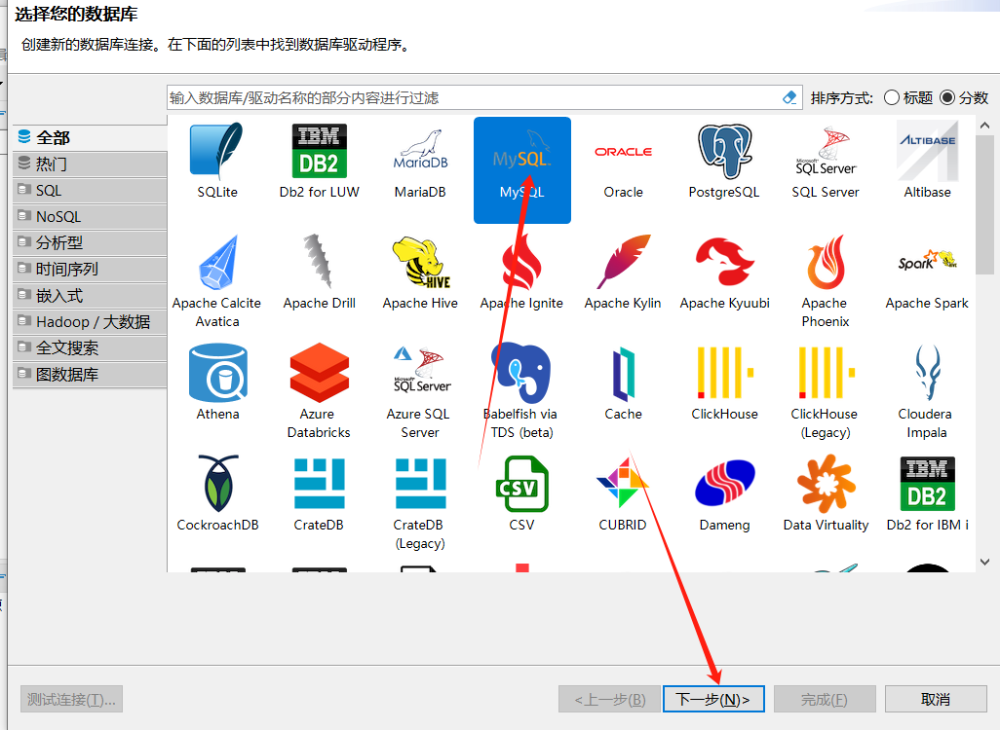
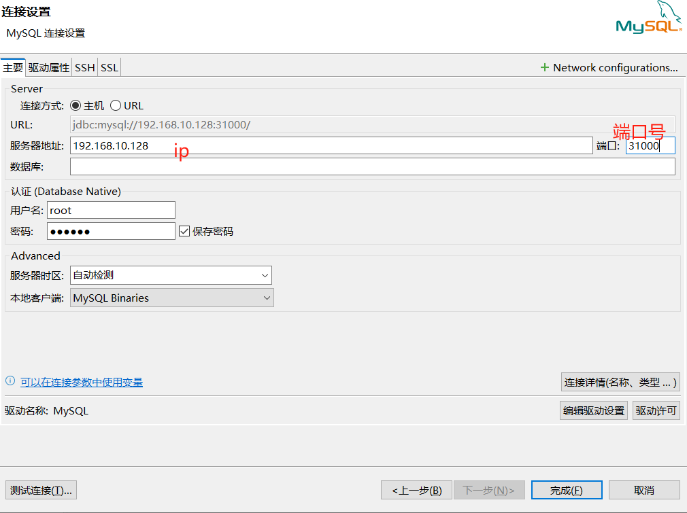
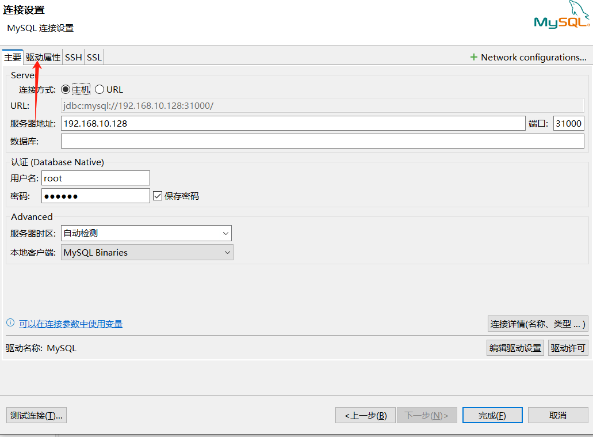
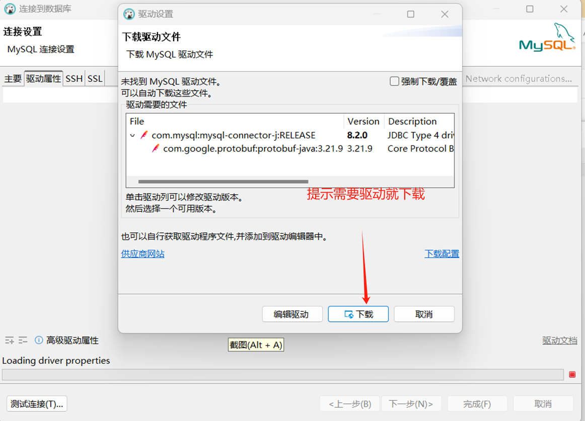
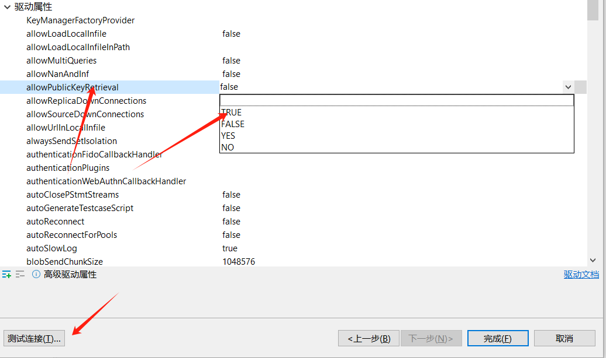
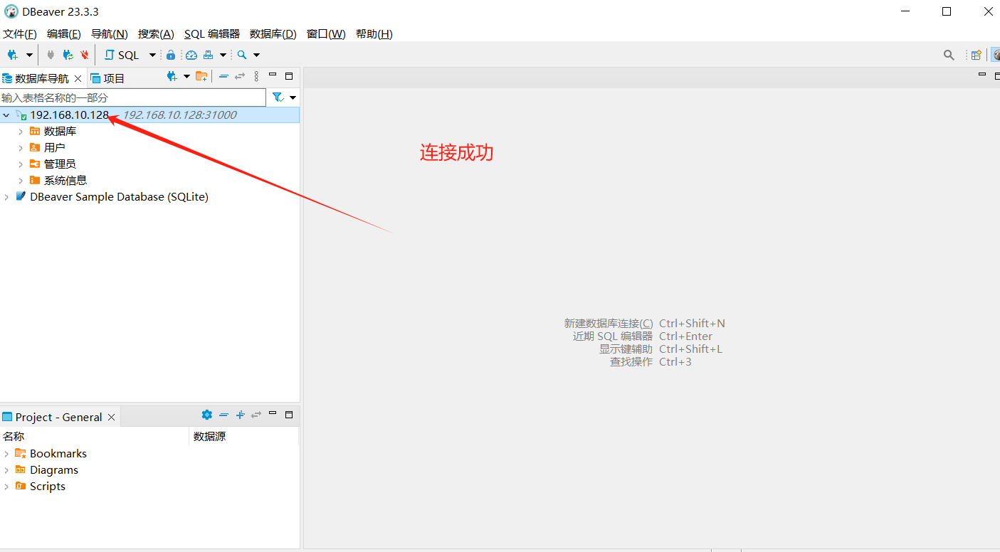
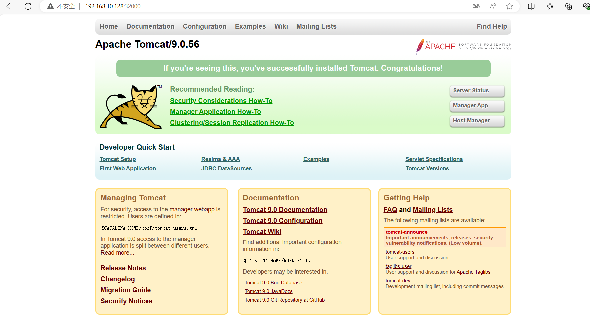

k8s 集群测试
K8S/k8s 集群测试.md一、部署nginx
1.1 部署nginx
#### 没有任何资源
[root@master ~]# kubectl get deployment
No resources found in default namespace.
#创建一个nginx，--image指定镜像，部署nginx
[root@master ~]# kubectl create deployment nginx --image=nginx
deployment.apps/nginx created
#查询deployment里面的pod
[root@master ~]# kubectl get deployment
NAME READY UP-TO-DATE AVAILABLE AGE
nginx 0/1 1 0 12s
#查询所有的pod
[root@master ~]# kubectl get pod
NAME READY STATUS RESTARTS AGE
nginx-86c57db685-x6n5s 1/1 Running 0 108s
#利用-o wide更加详细的内容，可以看到当前这个pod是部署在哪一个node节点
[root@master ~]# kubectl get -o wide pod
NAME READY STATUS RESTARTS AGE IP NODE NOMINATED NODE READINESS GATES
nginx-86c57db685-x6n5s 1/1 Running 0 2m23s 10.244.1.2 node1 <none> <none>
1.2 使用内部IP测试访问
[root@master ~]# curl 10.244.1.2
<!DOCTYPE html>
<html>
<head>
<title>Welcome to nginx!</title>
<style>
html { color-scheme: light dark; }
body { width: 35em; margin: 0 auto;
font-family: Tahoma, Verdana, Arial, sans-serif; }
</style>
</head>
<body>
<h1>Welcome to nginx!</h1>
<p>If you see this page, the nginx web server is successfully installed and
working. Further configuration is required.</p>
<p>For online documentation and support please refer to
<a href="http://nginx.org/">nginx.org</a>.<br/>
Commercial support is available at
<a href="http://nginx.com/">nginx.com</a>.</p>
<p><em>Thank you for using nginx.</em></p>
</body>
</html>
1.3 集群外部访问nginx程序
- 如果没有做端口暴漏，外部无法访问
#暴漏端口
[root@master ~]# kubectl expose deployment nginx --port=80 --type=NodePort
service/nginx exposed
#查询service详细获得暴漏的端口和映射的端口
[root@master ~]# kubectl get service
NAME TYPE CLUSTER-IP EXTERNAL-IP PORT(S) AGE
kubernetes ClusterIP 10.96.0.1 <none> 443/TCP 4h42m
nginx NodePort 10.96.104.218 <none> 80:30690/TCP 75s

-
部署nginx程序：
-
创建deploymant
-
创建时候指明创建的是什么程序，--image=nginx
-
创建nginx后，集群内部可以使用curl命令去访问这个程序做验证
-
-
创建暴漏端口
- 作用： 创建暴漏端口之后就可以把nginx程序的端口，对外公开，K8S集群外也可以进行访问
- 访问地址：masterIP：暴漏端口
- 案例：http://192.168.10.128:30690
-
二、部署mysql
目标：在看s集群内部部署mysql，验证集群是否可以正常通信
[root@master home]# vim mysql-rc.yml
apiVersion: v1 #定义apiserver的版本
kind: ReplicationController #指定pod控制器
metadata: #定义资源的元数据
name: mysql #指定创建程序的名字
spec: #定义deployment的参数
replicas: 1 #定义副本数量
selector: #定义标签
app: mysql
template: #定义模板
metadata:
labels:
app: mysql
spec:
containers:
- name: mysql #定义容器的名称
image: mysql:8.0.21 #指定镜像文件
ports:
- containerPort: 3306 #定义容器的对外端口
env:
- name: MYSQL_ROOT_PASSWORD #设置登录密码
value: "123456"
- 创建service
[root@master home]# kubectl apply -f mysql-rc.yml
replicationcontroller/mysql created
- 编写文件，暴漏端口
[root@master home]# vim mysql-service.yaml
apiVersion: v1
kind: Service
metadata:
name: mysql
spec:
type: NodePort
ports:
- port: 3306
nodePort: 31000
selector:
app: mysql
- 创建service
[root@master home]# kubectl create -f mysql-service.yaml
service/mysql created
[root@master home]# kubectl get service
NAME TYPE CLUSTER-IP EXTERNAL-IP PORT(S) AGE
kubernetes ClusterIP 10.96.0.1 <none> 443/TCP 5h34m
mysql NodePort 10.100.252.10 <none> 3306:31000/TCP 15s
nginx NodePort 10.96.104.218 <none> 80:30690/TCP 53m







三、 部署tomcat
[root@master home]# vim tomcat-deploy.yaml
apiVersion: apps/v1 #声明apiserver版本
kind: Deployment #定义资源类型
metadata: #定义元数据
name: tomcat-deploy
spec: #定义资源参数
replicas: 1 #副本数量
selector: #定义标签
matchLabels:
app: tomcat9
template: #定义模板
metadata:
labels:
app: tomcat9
spec: #定义
containers: #定义容器的属性
- name: mytomcat #容器名
image: tomcat:9.0 #镜像名
ports:
- containerPort: 8080 #暴漏的端口
- 创建tomcat
[root@master home]# kubectl apply -f tomcat-deploy.yaml
- 调整网页路径
[root@master home]# kubectl get -o wide pod
NAME READY STATUS RESTARTS AGE IP NODE NOMINATED NODE READINESS GATES
mysql-4zht6 1/1 Running 0 60m 10.244.2.2 node2 <none> <none>
nginx-86c57db685-x6n5s 1/1 Running 0 126m 10.244.1.2 node1 <none> <none>
tomcat-deploy-8bdf74dd-j2tn7 1/1 Running 0 5m32s 10.244.2.3 node2 <none> <none>
[root@master home]# kubectl exec -it tomcat-deploy-8bdf74dd-j2tn7 /bin/bash
#移动ROOT目录到webapps目录下
root@tomcat-deploy-8bdf74dd-j2tn7:/usr/local/tomcat# mv webapps.dist/ROOT webapps
到此，tomcat部署完成，但是仅限于集群内部访问，集群以外不可以访问
如果想要集群外也可以访问，需要暴漏端口
-
端口暴漏文件
- 作用：让集群外的用户也可以访问集群内的内容
[root@master home]# vim tomcat-service.yaml
apiVersion: v1
kind: Service
metadata:
name: tomcatservice
spec:
type: NodePort
ports:
- port: 8080
targetPort: 8080
nodePort: 32000
selector:
app: tomcat9
[root@master home]# kubectl apply -f tomcat-service.yaml
service/tomcatservice created
[root@master home]# vim tomcat-service.yaml
[root@master home]# kubectl get service
NAME TYPE CLUSTER-IP EXTERNAL-IP PORT(S) AGE
kubernetes ClusterIP 10.96.0.1 <none> 443/TCP 6h44m
mysql NodePort 10.100.252.10 <none> 3306:31000/TCP 70m
nginx NodePort 10.96.104.218 <none> 80:30690/TCP 123m
tomcatservice NodePort 10.98.187.212 <none> 8080:32000/TCP 58s
